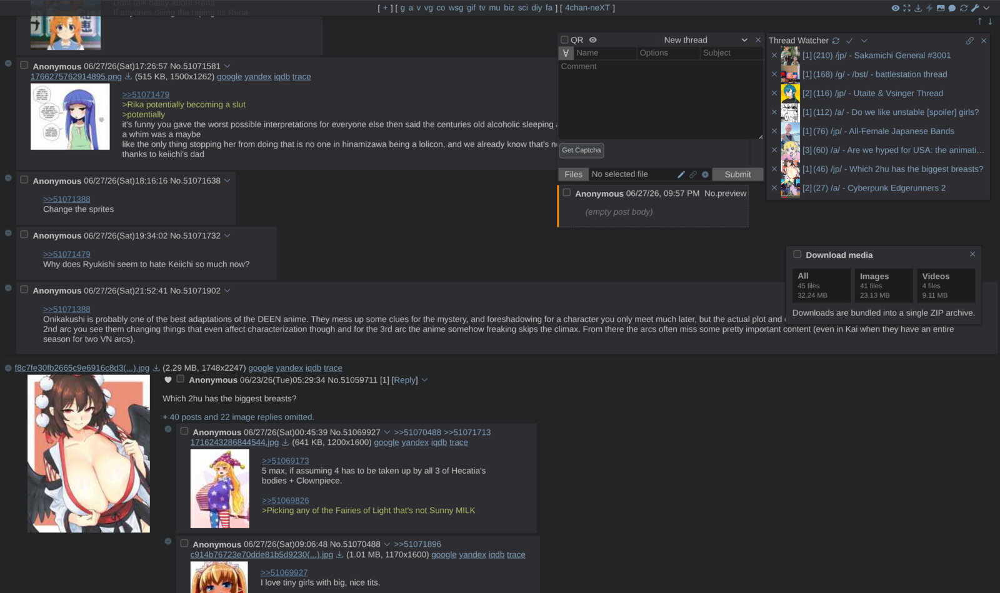

> userscript for anonymous imageboards
4chan-neXT
An actively maintained 4chan X fork with compatibility fixes, UI improvements, theme-aware styling, posting upgrades, monitoring tools, and fork-specific features.
> or install the beta · for testers, expect bugs

> what it does
Built for day-to-day browsing
neXT keeps the familiar 4chan X workflow and layers practical maintenance over posting, thread watching, filtering, styling, media handling, and linkification.
- Quick Reply drafts, attachment recovery, previews & docking controls
- Thread watcher with OP thumbnails, read state & hover previews
- Built-in themes, styling-script integration & custom CSS hooks
- Responsive filters, catalog search, scrollbar markers & gallery upgrades
> compatibility
Runs where you browse
Install through a userscript manager, or grab the native Chrome extension build. neXT auto-updates with every release.
| // install via | Chrome · Edge · Brave · Opera | Firefox 78+ |
|---|---|---|
| Tampermonkey recommended | MV3 · user-scripts toggle | |
| Violentmonkey | MV2 only | |
| Greasemonkey 1.14+ | never supported | |
| Native extension build zero setup |
! Chrome dropped Manifest V2 — MV2-only managers keep working in Firefox and other MV2-capable browsers. On Chromium, Tampermonkey needs “Allow user scripts” enabled on its extension details page (Chrome 138+; Developer Mode on older builds).
$ prefer zero setup on Chrome? use the native Chrome extension build — no userscript manager needed